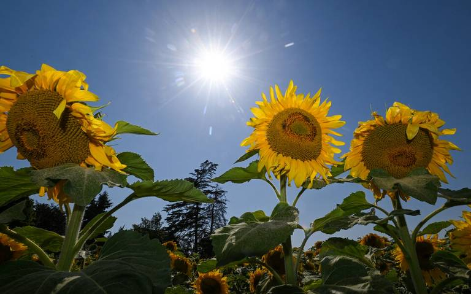

Jhon Carreño --
Karim Castillo --
Ivan Villarreal

La primavera es una de las cuatro estaciones del año, sigue al invierno y precede al verano. La definición y duración de la misma varía, desde el punto de vista meteorológico; es propia de las zonas templadas y corresponde a un tiempo intermedio entre la estación fría, el invierno, y la cálida, el verano
El verano es la estación del año que tiene lugar entre la primavera y el otoño. Se trata de la época más calurosa del año, con las marcas térmicas más elevadas. En el hemisferio septentrional, el verano tiene lugar entre junio, julio y agosto
El otoño es una de las cuatro estaciones del año de las zonas templadas, y de las dos estaciones de la zona intertropical. Sigue al verano y precede al invierno. Astronómicamente, comienza con el equinoccio de otoño y termina con el solsticio de invierno.
El invierno es una de las cuatro estaciones de las zonas templadas. Se caracteriza por días más cortos, noches más largas y temperaturas más bajas conforme nos alejamos del ecuador. Es la estación posterior al otoño y que precede a la primavera.